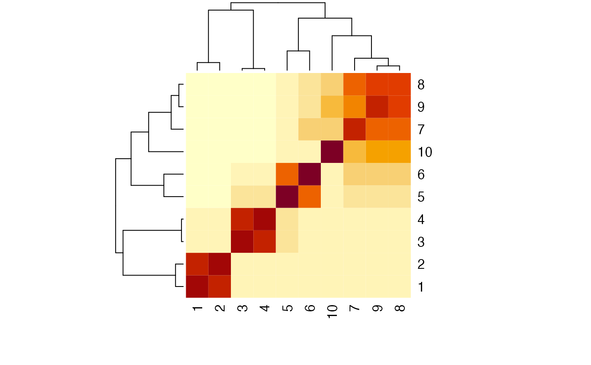

Background notes: Simulating GWAS summary data
Source:vignettes/gwas_summary_data.Rmd
gwas_summary_data.Rmd
library(simulateGP)
library(tidyverse)
#> ── Attaching core tidyverse packages ──────────────────────── tidyverse 2.0.0 ──
#> ✔ dplyr 1.1.4 ✔ readr 2.1.4
#> ✔ forcats 1.0.0 ✔ stringr 1.5.1
#> ✔ ggplot2 3.4.2 ✔ tibble 3.2.1
#> ✔ lubridate 1.9.2 ✔ tidyr 1.3.0
#> ✔ purrr 1.0.2
#> ── Conflicts ────────────────────────────────────────── tidyverse_conflicts() ──
#> ✖ dplyr::filter() masks stats::filter()
#> ✖ dplyr::lag() masks stats::lag()
#> ℹ Use the conflicted package (<http://conflicted.r-lib.org/>) to force all conflicts to become errorsGWAS summary data can be generated in two ways
- Given a set of parameters, generate the genotypes for a set of individuals and the phenotypes that arise from those genotypes. Then obtain linear regression estimates from these simulated individual level data
- Given a set of parameters, simulate the summary level data directly
here we look at (1).
Given the following inputs:
- True causal effects of a set of SNPs
- Minor allele frequency of those SNPs
- Heritability explained by those SNPs
- Sample size in which they are estimated
We would like to obtain:
- Standard error of SNP effect on trait
- Sampled estimate of SNP effect on trait
- P-value of SNP effect estimate for trait
Strategy is to begin by obtaining the expected standard error for the true causal effect for each SNP, and then sampling an estimated SNP effect based on the expected standard error.
Expected standard error
For a linear model
\[ y_i = \beta_0 + \beta_1 x_i + \epsilon_i \]
The coefficient estimates are
\[ \hat{\beta}_1 = cov(x,y) / var(x) \]
and
\[ \hat{\beta}_0 = \bar{y} - \hat{\beta}_1 \bar{x} \]
The standard error of a regression coefficient is:
\[ s_{\hat{\beta}_1} = \sqrt{\frac{\sum{\epsilon_i^2}}{(n-2) \sum{(x_i - \bar{x})^2}}} \]
This can be broken down. The denominator is the sum of squares of X:
\[ \begin{aligned} (x_i - \bar{x})^2 &= (n-1) Var(x) \\ &\approx (n-1) 2p(1-p) \end{aligned} \]
where \(p\) is the allele frequency of the SNP and \(n\) is the sample size. The numerator is the mean squared error, which relates to the variance unexplained in Y:
\[ \begin{aligned} \sum \epsilon_i^2 &= \sum(y_i - \hat{y}_i)^2 \\ &= (n-1)(Var(y) - r^2 Var(y)) \\ &\approx (n-1)(Var(y) - \hat{\beta}_1^2 Var(x)) \\ &\approx (n-1)(Var(y) - 2 p(1-p) \hat{\beta}_1^2) \end{aligned} \]
Quick check:
Sampling the effect estimate
Given a standard error \(s_{\hat{\beta}_1}\), we can obtain an estimated value for \(\beta_1\) using
\[ \hat{\beta}_1 \sim N(\beta_1, s_{\hat{\beta}_1}) \]
Question: Do I need to update the expected standard error based on the sampled value of \(\hat{\beta}_1\)?
Sampling a set of effect estimates
Suppose we need a set of SNPs to explain some proportion of the variance in a trait.
When specifying the SNP effects there is a simple model that can relate to a SNP to its contribution to heritability
\[ h^2_j = \frac{2p_j(1-p_j)\beta^2_j}{Var(y)} \]
Also
\[ \begin{aligned} h_j^2 &= \frac{Cov(x_j, y)^2}{Var(x_j)Var(y)} \\ &= \frac{\beta_j^2}{Var(y)} \end{aligned} \]
and
\[ h^2 = \sum^M_j h_j^2 \]
If each SNP has MAF of \(p_j\) and effect of \(\beta_j\), then
\[ V_G = \sum^M_j 2p_j(1-p_j)\beta^2_j \]
\[ V_E = \frac{V_G(1 - h^2)}{h^2} \] and
\[ Var(y) = V_G + V_E \]
Once SNP effects have been sampled then they can be scaled to represent a phenotype with variance of 1:
\[ \beta_j^* = \frac{\beta_j}{\sqrt{Var(y)}} \]
Relating SNP effects to allele frequencies can be done by specifying a selection model. Generalise the relationship between the SNP effects, allele frequencies and selection coefficient of the trait:
\[ \beta_j \sim N(0, [2p_j (1-p_j)]^S \sigma^2_\beta) \]
Where S is the parameter describing the selection acting on the trait. Here \(\sigma^2_\beta = V_G / M\) if all SNPs were scaled to have variance of 1 and mean of 0.
\[ \begin{aligned} \sigma^2_\beta &= \sum^M_j (\beta_j-\bar{\beta})^2 \\ &= \sum^M_j \beta_j^2 \end{aligned} \]
when the distribution of SNP effects is centred. This can be adapted to the BayesS model, in which some proportion of SNPs have no effect:
\[ \beta_j \sim N(0, [2p_j (1-p_j)]^S \sigma^2_\beta)\pi + \vartheta (1 - \pi) \]
I think ultimately the presence of \(\sigma^2_\beta\) in this model does not actually mean anything, it scales the SNP effects with respect to the variance of the phenotype. Use the following function to generate SNP effects for a set of SNPs according to specified MAF, heritability and selection model:
generate_gwas_params
#> function (map, h2, S = 0, Pi = 1)
#> {
#> stopifnot(all(c("snp", "af") %in% names(map)))
#> stopifnot(all(map$af > 0 & map$af < 1))
#> stopifnot(!any(duplicated(map$snp)))
#> nsnp <- nrow(map)
#> if (h2 == 0) {
#> map$beta <- 0
#> return(map)
#> }
#> index <- sample(1:nsnp, ceiling(nsnp * Pi), replace = FALSE)
#> map$beta <- 0
#> map$beta[index] <- stats::rnorm(length(index), mean = 0,
#> sd = sqrt((map$af[index] * 2 * (1 - map$af[index]))^S))
#> vg <- sum(map$af * 2 * (1 - map$af) * map$beta^2)
#> ve <- (vg - h2 * vg)/h2
#> vy <- vg + ve
#> map$beta <- map$beta/sqrt(vy)
#> return(map)
#> }
#> <bytecode: 0x117d98cf8>
#> <environment: namespace:simulateGP>Create a map
Negative selection:
g <- generate_gwas_params(map, h2=0.4, S=-2)
plot(g)Positive selection:
g <- generate_gwas_params(map, h2=0.4, S=2)
plot(g)
Neutral model:
g <- generate_gwas_params(map, h2=0.4, S=0)
plot(g)Note that the genetic variance is the heritability
sum(g$beta^2 * 2 * g$af * (1-g$af))
#> [1] 0.4Bringing it all together, we can simulate a set of GWAS summary stats by first specifying the true effects we want, and then obtaining sampled effects, standard errors and p-values.
# Simulate 1 million SNPs,
# with 10 large effects,
# a polygenic background of 10000 SNPs,
# and all others with no effects
map <- rbind(
tibble(af = runif(10, 0.4, 0.5), group=1),
tibble(af = runif(10000, 0.01, 0.5), group=2),
tibble(af = runif(1000000-10-10000, 0.01, 0.5), group=3)
) %>%
mutate(snp=1:n())
param <- rbind(
generate_gwas_params(subset(map, group==1), h2=0.1, S=0),
generate_gwas_params(subset(map, group==2), h2=0.3, S=0),
generate_gwas_params(subset(map, group==3), h2=0, S=0)
)
# Generate GWAS summary stats
res <- generate_gwas_ss(param, 450000)Compare to individual level data results to summary data simulations
set.seed(100)
h2 <- 0.1
nid <- 10000
param <- tibble(af=runif(100, 0.01, 0.5), snp=1:100) %>%
generate_gwas_params(h2=h2, S=0)
res1 <- generate_gwas_ss(param, nid)
g <- lapply(param$af, function(x) rbinom(nid, 2, x)) %>%
bind_cols() %>%
as.matrix()
#> New names:
#> • `` -> `...1`
#> • `` -> `...2`
#> • `` -> `...3`
#> • `` -> `...4`
#> • `` -> `...5`
#> • `` -> `...6`
#> • `` -> `...7`
#> • `` -> `...8`
#> • `` -> `...9`
#> • `` -> `...10`
#> • `` -> `...11`
#> • `` -> `...12`
#> • `` -> `...13`
#> • `` -> `...14`
#> • `` -> `...15`
#> • `` -> `...16`
#> • `` -> `...17`
#> • `` -> `...18`
#> • `` -> `...19`
#> • `` -> `...20`
#> • `` -> `...21`
#> • `` -> `...22`
#> • `` -> `...23`
#> • `` -> `...24`
#> • `` -> `...25`
#> • `` -> `...26`
#> • `` -> `...27`
#> • `` -> `...28`
#> • `` -> `...29`
#> • `` -> `...30`
#> • `` -> `...31`
#> • `` -> `...32`
#> • `` -> `...33`
#> • `` -> `...34`
#> • `` -> `...35`
#> • `` -> `...36`
#> • `` -> `...37`
#> • `` -> `...38`
#> • `` -> `...39`
#> • `` -> `...40`
#> • `` -> `...41`
#> • `` -> `...42`
#> • `` -> `...43`
#> • `` -> `...44`
#> • `` -> `...45`
#> • `` -> `...46`
#> • `` -> `...47`
#> • `` -> `...48`
#> • `` -> `...49`
#> • `` -> `...50`
#> • `` -> `...51`
#> • `` -> `...52`
#> • `` -> `...53`
#> • `` -> `...54`
#> • `` -> `...55`
#> • `` -> `...56`
#> • `` -> `...57`
#> • `` -> `...58`
#> • `` -> `...59`
#> • `` -> `...60`
#> • `` -> `...61`
#> • `` -> `...62`
#> • `` -> `...63`
#> • `` -> `...64`
#> • `` -> `...65`
#> • `` -> `...66`
#> • `` -> `...67`
#> • `` -> `...68`
#> • `` -> `...69`
#> • `` -> `...70`
#> • `` -> `...71`
#> • `` -> `...72`
#> • `` -> `...73`
#> • `` -> `...74`
#> • `` -> `...75`
#> • `` -> `...76`
#> • `` -> `...77`
#> • `` -> `...78`
#> • `` -> `...79`
#> • `` -> `...80`
#> • `` -> `...81`
#> • `` -> `...82`
#> • `` -> `...83`
#> • `` -> `...84`
#> • `` -> `...85`
#> • `` -> `...86`
#> • `` -> `...87`
#> • `` -> `...88`
#> • `` -> `...89`
#> • `` -> `...90`
#> • `` -> `...91`
#> • `` -> `...92`
#> • `` -> `...93`
#> • `` -> `...94`
#> • `` -> `...95`
#> • `` -> `...96`
#> • `` -> `...97`
#> • `` -> `...98`
#> • `` -> `...99`
#> • `` -> `...100`
score <- g %*% param$beta
err <- rnorm(nid, mean=0, sd=sqrt(var(score) * (1-h2) / h2))
y <- score + err
res2 <- gwas(y, g)
plot(res2$bhat ~ res1$bhat)
plot(res2$se, res1$se)
Sensitivitiy to HWE
The summary data results are not always perfect.
make_correlated_vars <- function(nid, nsnp, af)
{
x <- matrix(0, nid, nsnp)
x[,1] <- rbinom(nid, 2, af)
for(i in 2:nsnp)
{
x[,i] <- rbinom(nid, 2, plogis(scale(x[,i-1])))
}
return(x)
}
make_correlated_vars <- function(nid, nsnp, af)
{
x <- matrix(0, nid, nsnp)
x[,1] <- rbinom(nid, 2, af)
for(i in 2:nsnp)
{
index <- sample(1:nid, runif(1) * nid, replace=FALSE)
x[,i] <- x[,i-1]
x[index,i] <- sample(x[index,i-1])
}
return(x)
}Simulate correlated variables
set.seed(12345)
nid <- 1000000
nsnp <- 10
X <- make_correlated_vars(nid, nsnp, 0.5)
rho <- cor(X)
heatmap(rho)
Get estimates from individual level data
Now from summary data directly
map <- tibble(snp=1:10, af=colMeans(X)/2)
out2 <- map %>%
mutate(beta=b) %>%
generate_gwas_ss(nid, ld=rho, vy=var(y))Compare beta estimates
plot(out2$bhat ~ out$bhat)Compare se
plot(out2$se ~ out$se)When there is a real effect the SE is correct, but the SE for the null effects are slightly too large.
Check with uncorrelated variables
Xu <- matrix(rbinom(nid * nsnp, 2, 0.5), nid, nsnp)
y <- Xu %*% b + rnorm(nid)
outu <- gwas(y, Xu)
rhou <- cor(Xu)
heatmap(rhou)Generate summary data
map <- tibble(snp=1:10, af=colMeans(Xu)/2)
out3 <- map %>%
mutate(beta=b) %>%
generate_gwas_ss(nid, vy=var(y))Compare betas
plot(out3$bhat ~ outu$bhat)Compare se
plot(out3$se ~ outu$se)Suddenly well behaved…?
Try to re-generate the expected SEs, where is the problem arising?
Actual SE
summary(mod)$coef[2,2]
#> [1] 0.001468453Which comes from
Now work backwards, introducing more summary level information to replace individual level calculations. Estimate residual variance:
(sqrt(var(y) - out$bhat[10]^2 * var(X[,10])) * sqrt((nid-1)/(nid-2))) / sqrt(nid) * (1/sd(X[,10]))
#> [,1]
#> [1,] 0.001468453Estimate residual variance from simulated beta
(sqrt(var(y) - b[10]^2 * 2 * af[10] * (1-af[10])) * sqrt((nid-1)/(nid-2))) / sqrt(nid) * (1/sd(X[,10]))
#> [,1]
#> [1,] 0.001468453Use allele frequency to estimate residual variance (very marginal as it explains a tiny amount)
(sqrt(var(y) - b[10]^2 * 2 * af[10] * (1-af[10])) * sqrt((nid-1)/(nid-2))) / sqrt(nid) * (1/sd(X[,10]))
#> [,1]
#> [1,] 0.001468453Now use allele frequency to estimate variance of X
(sqrt(var(y) - b[10]^2 * 2 * af[10] * (1-af[10])) * sqrt((nid-1)/(nid-2))) / sqrt(nid) * (1/sqrt(2*af[10]*(1-af[10])))
#> [,1]
#> [1,] 0.001469628If the SNP is not in HWE then there will be a problem